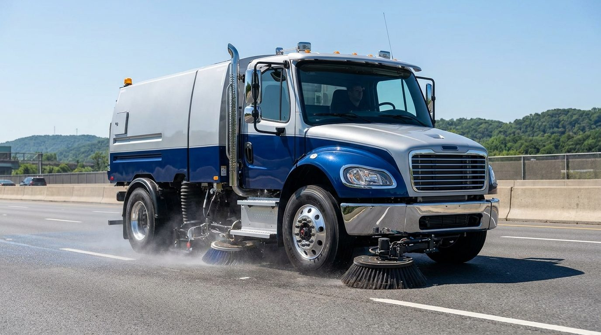
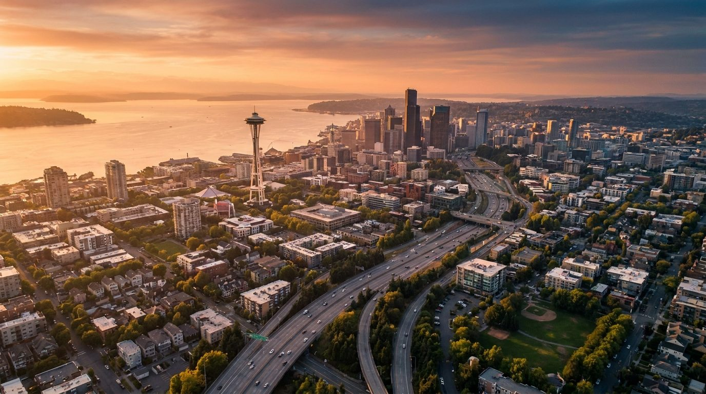

Street Sweeping • Dump Trucking • Water Trucks • Snow & Ice Response
KCD Trucking provides dependable street sweeping, dump trucking, water truck services, hauling, dust control, snow and ice response, and construction support for major infrastructure projects and active jobsites throughout the Pacific Northwest.
Certified & Trusted on Public Work
What KCD Does Today
From highways and bridges to airports, commercial construction sites, and major transportation projects, KCD brings experienced operators, reliable equipment, responsive service, and field-tested performance to every job.
Construction, highway, and jobsite sweeping — including nighttime operations, track-out and debris removal, and FOD-focused sweeping in applicable project environments.
Construction material hauling, dirt and aggregate transportation, debris removal, and heavy-civil trucking support — scheduled or on demand.
Dust suppression, construction-site watering, and roadway and haul-route dust control where site conditions demand dependable water application.
Snow plowing, deicing support, and emergency winter operations for clients that need dependable service when snow and ice affect access and safety.

Proven in Complex Environments
KCD Trucking has supported major construction and infrastructure work throughout the Puget Sound region — including active airport environments at SEA-TAC, highway and bridge corridors, and transit projects.
What Clients Can Expect
Hands-on experience supporting demanding construction and infrastructure environments.
A commitment to showing up prepared and doing the work the project requires.
The ability to adjust when schedules, site conditions, or project needs change.
A field-first mindset that recognizes safe operations as the foundation of successful performance.
Multiple core services that help project teams solve sweeping, trucking, water, hauling, and winter-response needs.
A long-term approach built on communication, accountability, and trust.
Additional KCD Capability
Through KCD Solutions, the KCD enterprise also provides practical cleaning and facility-support services for construction sites, project offices, trailers, and active work environments.
From the jobsite to the project office — KCD helps keep the work environment clean, functional, and ready for the people responsible for delivering the project.
Learn About KCD Solutions
Street sweeping. Dump trucking. Water truck services. Snow and ice response. Dependable field support for the projects that build and maintain our communities.
Request a Quote